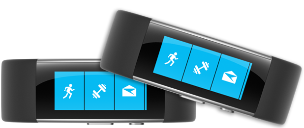

Microsoft Band 2 to inteligentna opaska drugiej generacji z funkcjami smartwatcha opracowanymi przez firmę Microsoft. Ogłoszony 6 października 2015 r., Zastąpił oryginalny zespół Microsoft Band i był początkowo dostępny w Stanach Zjednoczonych, Wielkiej Brytanii i Kanadzie. Później był również dostępny w Australii za pośrednictwem flagowego sklepu w Sydney, sklepu internetowego Microsoft i wybranych sprzedawców detalicznych, takich jak JB Hi-Fi i Harvey Norman. Podobnie jak jego poprzednik, zawiera śledzenie kondycji i jest kompatybilny ze smartfonami z systemem Windows, iOS i Android za pośrednictwem połączenia Bluetooth. W dniu 3 października 2016 roku został przerwany
Powrót